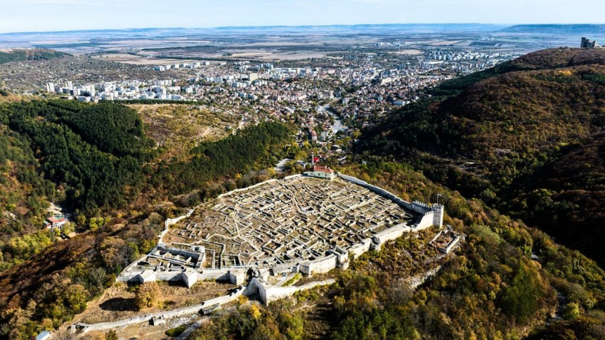
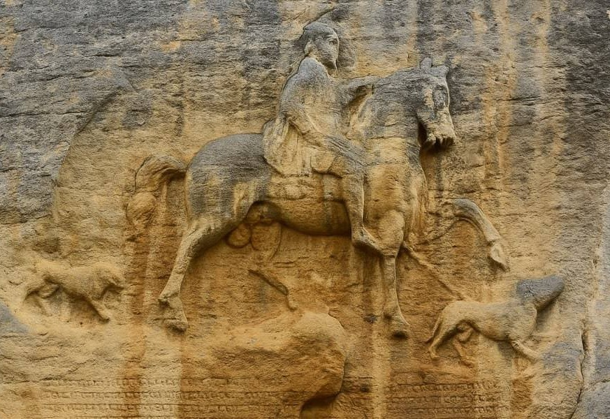

MobiriseExplore the history, nature and traditions that shape the identity of the region.
Located in northeastern Bulgaria, Shumen is a region rich in history, nature and cultural heritage. Its landscapes and traditions inspire local producers to create authentic products connected to the land.
Shumen Fortress is one of the most significant historical landmarks in the region, with origins dating back more than 3,000 years. Developed by Thracians, Romans and medieval Bulgarians, the fortress tells the story of Shumen’s strategic importance throughout history.

Built in 1981, the Monument to the Founders of the Bulgarian State commemorates the 1,300th anniversary of the First Bulgarian Empire. Located above Shumen, it represents the strength, heritage and achievements of the Bulgarian people.
The Madara Rider is an extraordinary rock relief dating back to the early 8th century. Located near Shumen, this UNESCO World Heritage Site represents the strength, history and cultural identity of the First Bulgarian Empire.

Mobirise